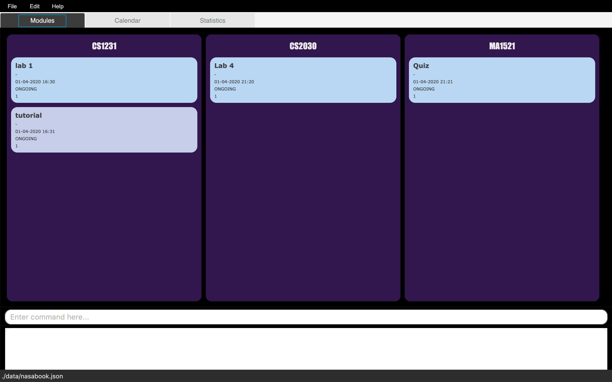

By: CS2103T-T10-4 Since: Feb 2020 Licence: NUS
- 1. Introduction
- 2. Quick Start
- 3. Features
- 3.1. Viewing help :
help - 3.2. Adding a module task-list:
Madd - 3.3. Adding a task into a module task-list:
Tadd - 3.4. Listing all tasks :
list - 3.5. Editing a task :
edit - 3.6. Locating tasks by name:
find - 3.7. Deleting a task :
delete - 3.8. Export to calendar
export[coming in v1.2] - 3.9. Clearing all entries :
clear - 3.10. Exiting the program :
exit - 3.11. Saving the data
- 3.12. Encrypting data files
[coming in v2.0]
- 3.1. Viewing help :
- 4. FAQ
- 5. Command Summary
1. Introduction
Nice & Amazing Student Assistant (NASA) is an application for busy university students to manage their module assignments, lessons, exams and consultations etc. More importantly, NASA is optimized for those who prefer to work with a Command Line Interface (CLI) while still having the benefits of a Graphical User Interface (GUI). If you can type fast, NASA can keep track of your module tasks faster than traditional GUI apps. Interested? Jump to the Section 2, “Quick Start” to get started. Time to take off!
2. Quick Start
-
Ensure you have Java
11or above installed in your Computer. -
Download the latest
NASA.jarhere. -
Copy the file to the folder you want to use as the home folder for your Address Book.
-
Double-click the file to start the app. The GUI should appear in a few seconds.
 -
Type the command in the command box and press Enter to execute it.
e.g. typinghelpand pressing Enter will open the help window. -
Some example commands you can try:
-
list: lists all tasks of each module -
Maddm/CS2103T n/Software Engineering: adds a module CS2103TSoftware Engineeringto the list. Allows tasks to be added to that module. -
Tadddeadline m/CS2103T d/20-02-2020 23:59 t/IP Project p/2 n/Must get an executable JAR file: adds a task called IP Project with the following details into CS2103T module task-list. -
deletem/CS2103T 1: deletes the 1st task shown in the module task-list. -
exit: exits the app
-
-
Refer to Section 3, “Features” for details of each command.
3. Features
Command Format
-
Words in
UPPER_CASEare the parameters to be supplied by the user e.g. inMadd m/MODULE_CODE,MODULE_CODEis a parameter which can be used asMadd m/CS1231. -
Items in square brackets are optional e.g
[n/Notes]. -
Items with
… after them can be used multiple times including zero times e.g.[m/MODULE_CODE]…means m/CS2103T CS2101 ….. -
Parameters can be in any order.
3.1. Viewing help : help
Format: help
3.2. Adding a module task-list: Madd
Adds a module task-list into the NASA application
Format: Madd m/MODULE_CODE n/MODULE_NAME
Examples:
-
Madd m/CS2030 n/Programming Methodology II -
Madd m/CS1231 n/Discrete Structures in Mathematics
3.3. Adding a task into a module task-list: Tadd
Adds a task into the specified module task-list
Format: Tadd TYPE_OF_TASK m/MODULE_CODE d/DATE t/TASKNAME [p/PRIORITY] [n/NOTES]
-
Type of tasks include
deadline,eventsandlessons. -
Deadline are meant for tasks that need to be done within a certain time.
-
Events means any related module activities that happen from a time and ends at another time.
-
Lessons are tutorials/classes for the modules and will auto reappear every week.
-
Date format varies! For deadlines:
DD-MM-YYYY HH:MM, for lessons and events:DD-MM-YYYY HH:MM - DD-MM-YYYY HH:MM. -
Default priority is 1 (priority value is from 1 to 5, where 1 is highest priority and 5 is lowest).
Examples:
-
Tadd lesson m/CS1020 d/12-02-2020 12:00 - 12-02-2020 14:00 t/Tutorial
-
Tadd deadline m/CS1020 d/20-02-2020 23:59 t/Assignment 1 p/1 n/Watch lecture 3 and 4 before doing
3.4. Listing all tasks : list
Shows a list of tasks+
Format: list [m/MODULE_CODE….]
-
If no module code is specified, all the module’s task-list will be shown
-
It is possible to add multiple module_codes and display all their relevant task-lists.
3.5. Editing a task : edit
Edits an existing task in the module’s task-list.
Format: edit m/MODULE_CODE INDEX [d/DATE] [n/NOTES] [p/PRIORITY] [t/TASKNAME]
Examples:
-
edit m/CS2103T 2 d/12-12-2020 23:59
Edits the 2nd task in CS2013T task-list date to be12-12-2020 23:59. -
edit m/CS2030 3 n/Finish LAB level 3 with Generics p/2
Edits the notes and priority of the 3rd task in CS2030 task-list toFinish LAB level 3 with Genericsand2respectively.
3.6. Locating tasks by name: find
Finds tasks whose names contain any of the given keywords.
Format: find KEYWORD [MORE_KEYWORDS]
Examples:
-
find tutorial
Returnstutorial 1andtutorial 2and any other tasks with name tutorial.
3.7. Deleting a task : delete
Deletes the specified task from module task-list.
Format: delete m/MODULE_CODE INDEX…
Examples:
-
list
delete m/CS2030 2
Deletes the 2nd task in the CS2030 module task-list. -
delete m/CS2030 2 3 4
Deletes the the 2nd, 3rd and 4th task from the CS2030 module task-list.
3.8. Export to calendar export [coming in v1.2]
Exports all module task-lists onto a calendar (.ics format) for users.
Format: export
Examples:
-
Tasks are listed as calendar events as shown. Full design not confirmed, image courtesy of [knack]
3.9. Clearing all entries : clear
Clears all entries from the NASA application (including module task-lists created).
Format: clear
3.10. Exiting the program : exit
Exits the program.
Format: exit
3.11. Saving the data
Address book data are saved in the hard disk automatically after any command that changes the data.
There is no need to save manually.
3.12. Encrypting data files [coming in v2.0]
{explain how the user can enable/disable data encryption}
4. FAQ
Q: How do I transfer my data to another Computer?
A: Install the app in the other computer and overwrite the empty data file it creates with the file that contains the data of your previous Address Book folder.
5. Command Summary
-
MAdd
Madd m/MODULE_CODE n/MODULE_NAME -
TAdd
Tadd TYPE_OF_TASK m/MODULE_CODE d/DATE t/TASKNAME [p/PRIORITY] [n/NOTES] -
Clear :
clear -
Delete :
delete m/MODULE_CODE INDEX… -
Edit :
edit m/MODULE_CODE INDEX [d/DATE] [n/NOTES] [p/PRIORITY] [t/TASKNAME] -
Find :
find KEYWORD [MORE_KEYWORDS] -
List :
list [m/MODULE_CODE…] -
Help :
help -
Export :
export